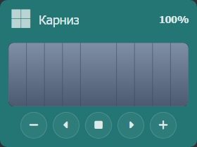

Ворота / жалюзи / шторы

Управление открытием и закрытием: картинка выбранного типа (ворота, жалюзи или шторы) показывает текущий процент открытия, а перетаскивание мышью по картинке задаёт новый процент.
Как работает
Картинка. В поле Тип конструкции выберите вид: Ворота сдвигаются в выбранную сторону (влево или вправо), Шторы раздвигаются в обе стороны, Жалюзи поднимаются снизу вверх. Вид рисуется средствами SVG и зависит от текущего значения свойства.
Управление мышью. Перетащите указатель по картинке: для штор открытие растёт по мере удаления от центра к краю, для ворот — по мере движения к стороне открытия, для жалюзи — по мере движения вверх. Пока вы тянете, картинка меняется, а значение записывается в объект по окончании перетаскивания. Двойной клик по картинке открывает (100%) или закрывает (0%) полностью.
Значение. Проценту открытия соответствует значение свойства в диапазоне Минимум–Максимум (по умолчанию 0–100). Если у устройства всё наоборот (0 — открыто), включите Инвертировать.
Кнопки. Внизу карточки пять круглых кнопок с иконками: − и + (изменить процент на Шаг) по краям, ↑ «Открыть» / ↓ «Закрыть» (полное открытие/закрытие) и по центру ■ «Стоп» (остановка движения). Иконки кнопок «Открыть» и «Закрыть» можно заменить полями Иконка кнопки «Открыть» / Иконка кнопки «Закрыть» (по умолчанию стрелки ↑ и ↓). Открытие/закрытие при заданных Метод открытия / Метод закрытия вызывают методы объекта, иначе пишут в свойство; остановка при заданном Метод остановки вызывает метод, иначе фиксирует текущее положение. Кнопки «Открыть» / «Закрыть», а также двойной клик, анимируют картинку плавно; длительность задаётся полем Скорость (в секундах).
Настройки
Основное main
| Поле | Ключ | Тип | По умолчанию | Описание |
|---|---|---|---|---|
| Название | title | text | — | Заголовок виджета на панели. |
| Тип иконки | icon_type | select | icon | Источник иконки: Иконка, Свойство или URL. |
| Иконка | icon | icon_picker | fas fa-warehouse | Класс Font Awesome, например fas fa-warehouse. |
| Объект (иконка) | icon_object | object | — | Объект, свойство которого содержит класс иконки. |
| Свойство (иконка) | icon_property | property | — | Свойство с классом иконки. |
| URL иконки | icon_url | text | — | Адрес картинки-иконки. |
| Тип конструкции | cover_type | select | curtain | Вид картинки: Ворота (в одну сторону), Жалюзи (вверх), Шторы (в обе стороны). |
| Сторона открытия ворот | gate_side | select | left | Куда сдвигаются ворота: Влево или Вправо. Показывается только для типа «Ворота». |
| Объект | object | object | — | Объект положения (степень открытия). Виджет читает из него процент и пишет в него изменения. |
| Свойство | property | property | position | Свойство положения, обычно position или level. |
| Минимум | level_min | number | 0 | Значение, соответствующее 0% открытия. |
| Максимум | level_max | number | 100 | Значение, соответствующее 100% открытия. |
| Шаг | level_step | number | 10 | На сколько процентов меняют значение кнопки «+» и «−». |
| Иконка кнопки «Открыть» | icon_open | icon_picker | — | Класс Font Awesome для кнопки открытия. Если пусто — стандартная fas fa-arrow-up. |
| Иконка кнопки «Закрыть» | icon_close | icon_picker | — | Класс Font Awesome для кнопки закрытия. Если пусто — стандартная fas fa-arrow-down. |
| Картинка проёма (день) | cover_image | text | — | Адрес картинки, которая показывается в открытой части (за шторой, жалюзи или воротами) днём. Если задана только она — показывается всегда, независимо от времени суток. |
| Картинка проёма (ночь) | cover_image_night | text | — | Картинка открытой части ночью. Показывается, когда заданы обе картинки. День/ночь определяются по закату и восходу (ThisComputer.SunRiseTime / SunSetTime), а если их нет — по времени: день 6:00–18:00, ночь 18:00–6:00. |
| — | Если обе картинки пусты — в открытой части показывается стандартное «стекло» (пустой проём). | |||
| Инвертировать | invert | checkbox | нет | Включите, если 0 означает «открыто». Меняется только показываемое число (0↔100), сама картинка остаётся на месте. |
| Скорость | anim_speed | number | 10 | Длительность анимации полного открытия/закрытия в секундах. Меньше — быстрее, больше — медленнее. 0 — мгновенно. |
| Объект (открыть) | object_open_obj | method_object | — | Объект, у которого вызывается метод открытия. В паре с «Метод открытия». |
| Метод открытия | object_open | method | — | Метод полного открытия. |
| Объект (закрыть) | object_close_obj | method_object | — | Объект, у которого вызывается метод закрытия. В паре с «Метод закрытия». |
| Метод закрытия | object_close | method | — | Метод полного закрытия. |
| Объект (стоп) | object_stop_obj | method_object | — | Объект, у которого вызывается метод остановки. В паре с «Метод остановки». |
| Метод остановки | object_stop | method | — | Метод остановки движения. Если не задан, кнопка просто фиксирует текущее положение. |
Дополнительно advanced
| Поле | Ключ | Тип | Описание |
|---|---|---|---|
| Фон виджета | bg_mode | select | Стиль фона карточки. |
| Цвет | color | color | Цвет фона (режим «Заданный цвет»). |
| URL изображения | bg_image | text | Фоновая картинка (режим «Изображение»). |
| Объект / Свойство (цвет фона) | bg_object / bg_property | object / property | Цвет фона из свойства (режим «Цвет из свойства»). |
| Признак доступности | object_alive | object | Объект контроля «живости» виджета. |
| Свойство (доступность) | property_alive | property | Свойство «живости». |
| Таймаут (сек) | alive_timeout | number | Сколько секунд ждать ответа. По умолчанию 3. |
| Информация объекта | object_info | object | Объект нижней строки информации. |
| Свойство (информация) | property_info | property | Свойство нижней строки информации. |
| Префикс / Постфикс информации | pre_info / pos_info | text | Текст до и после значения. |
| Фон / Круг | background / round | checkbox | Подложка под иконкой и её форма. |